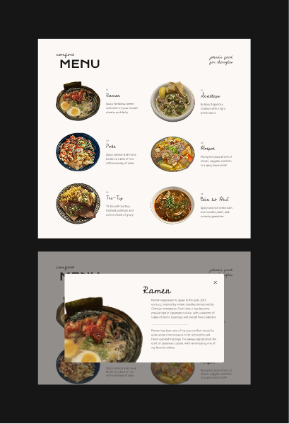
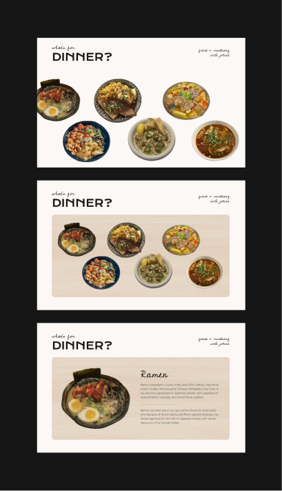
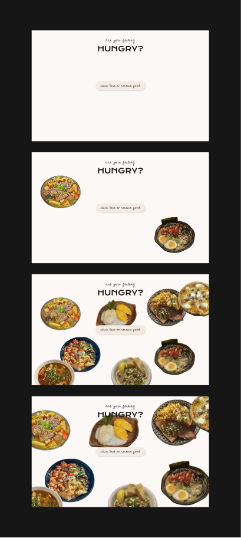

Every Picture Design Comp
Comfort Menu Concept

- Digital menu of my favorite comfort foods
- When hovered over, there would be an overlay with a modal stating the cultural history behind each dish and the history behind why each dish has a deeper meaning to me
- Sketch out what each dish looks like, but when hovered over each sketch, the image of the real dish would appear
What's For Dinner? Concept

- My love language is quality time and when I spend time with my family & friends, I'll almost always suggest to grab food together
- Hovering over each dish would cause the image to zoom up onto it and both the historical and my personal backgrounds behind each dish would appear
- Clicking on each dish would simulate taking bites out of it (figure out if only the food would disappear or the bowls would too → feels more playful if the bowls disappeared as well)
Are You Feeling Hungry? Concept

- Some of my friends have described my love language as showing it through food, whether that's going out to restaurants, cooking it for others, or appreciating dishes that have been cooked so outwardly that that person wants to keep cooking more for me
- My parents have always made sure that I'm well fed above anything else, so why not simulate that feeling?
- Clicking on the button will provide an infinite amount of food to eat → maybe each time you click, the food will multiply?
- Maybe as a user tries to scroll through the page, the food will start to enlarge and take up even more space?